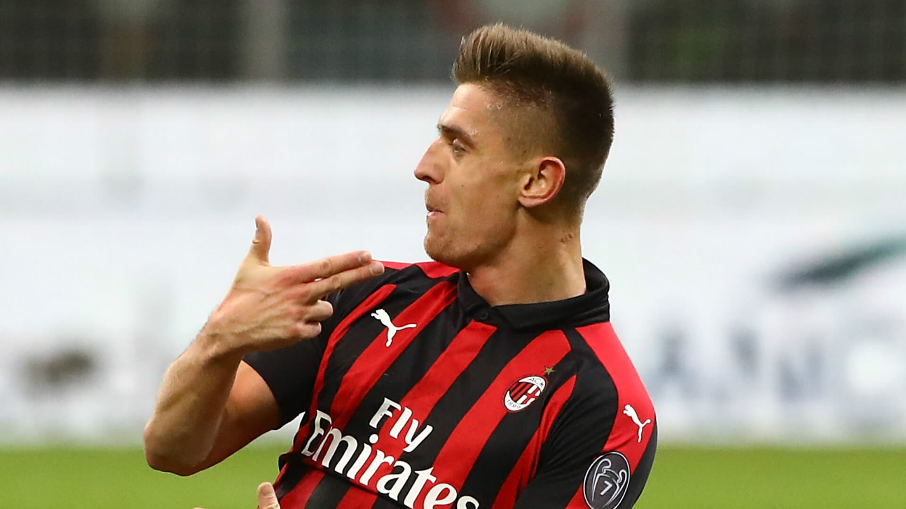
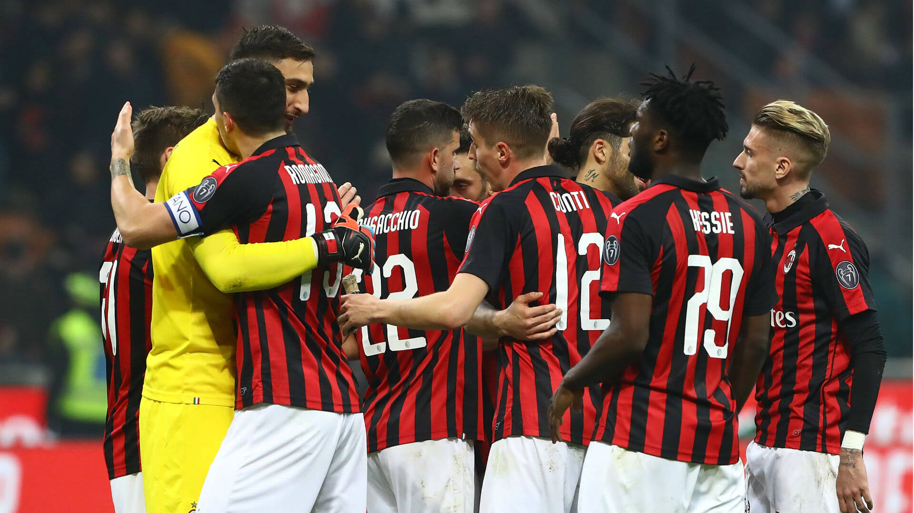

W sezonie 2002/2003 Milan zdobył Puchar Włoch, Puchar Europy i Superpuchar Europy. W tym czasie w Milanie grały takie znakomitości jak: Gennaro Gattuso, Rui Costa, Alessandro Nesta, Paolo Malidni... Finał Champions League został rozegrany pomiędzy Juventusem a Milanem i po karnych zwyciężyli Il Diavolo. W Serie A zajęliśmy niestety tylko 3. miejsce. Sezon 2003/2004 zakończył się udziałem w ćwierćfinale LM i 17. Scudetto. W tym też roku do Milanu przyszedł Ricardo Izecson dos Santos Leite "Kaká", który w przeciągu kliku lat stał się światową gwiazdą. W sezonie 2004/2005 Milan zajął 2. miejsce w Serie A, a Andriy Shevchenko zdobył Złotą Piłkę. Braliśmy również udział w finale Champions League, ale pomimo prowadzenia 3:0 do przerwy z Liverpoolem przegraliśmy ostatecznie w karnych.
Sezon kolejny, czyli 2005/2006 to już sezon Mistrzostw Świata. Milan zajął 2. miejsce w Serie A, ale na skutek udziału w aferze korupcyjnej został ukarany 8. ujemnymi punktami. Działacze naszej drużyny rzekomo brali udział w ustawianiu meczów i przekupowaniu sędziów. Dwóch z nich Leandro Meani i Adriano Galliani zostali ukarani. Pierwszy z nich został zawieszony na 2,5 roku zaś drugi na 9 miesięcy.
Prawie pół sezonu na ławce rezerwowych przesiedział nasz kapitan Paolo Maldini, którego kontuzja kolana będzie trapić jeszcze w następnym sezonie. W LM doszliśmy do półfinału, gdzie przegraliśmy po zaciętym boju z Barceloną, późniejszym triumfatorem tych rozgrywek. Okoliczności, w jakich przegraliśmy były dość nietypowe: w rewanżowym meczu na Camp Nou (w Mediolanie padł wynik 0:1 dla Barçy) arbiter Markus Merk nie uznał prawidłowo zdobytej bramki Andriya Shevchenki. Ponadto reprezentacja Włoch zdobyła Mistrzostwo Świata, a w jej składzie znaleźli się: Filippo Inzaghi, Alessandro Nesta, Andrea Pirlo, Gennaro Gattuso i Alberto Gilardino.
W sezonie 2006/2007 z klubu, prawie siedmiu latach odszedł Andriy Shevchenko, który strzelił dla nas 173 gole. Jego następca Ricardo Oliveira nie spełnił pokładanych w nim nadziei. Również reszta bombardierów nie radziła sobie najlepiej. Transfery jakich dokonano przed sezonem były niewystarczające. Zespół był również trapiony przez kontuzje i dość niespotykaną plagę słupków i porzeczek.... W połowie grudnia 2006 A.C. Milan zajmuje 15. pozycję w Serie A. W Champions League Milan również nie gra tak jakbyśmy sobie tego życzyli i mimo, że zagramy w 1/8 Ligi Mistrzów z Celticiem Glasgow, to nie możemy być zadowoleni z formy naszych graczy, jaką prezentują. Wiosna przyniosła sukcesy i ogromną radość! Sezon, 2006/07 za nami. Trzeba przyznać, że pomimo mało obiecującego początku, skończył się on nader szczęśliwie. A.C. Milan, który z 8. ujemnymi punktami, słabą formą i praktycznie brakiem nominalnego napastnika, został skreślony przez wszystkich zdobył Puchar Ligi Mistrzów! Droga do tego, 7. już tytułu została okupiona nie lada ciężką pracą, kontuzjami, no i przede wszystkim zszarganymi nerwami tifosich rossonerich z całego świata.
| AC Milan - Sezon 2019/2020 | ||
|---|---|---|
| Obrona | ||
|---|---|---|
| Numer | Zawodnik | Pozycja |
| 99 | G.Donnaruma | Bramkarz |
| 13 | A.Romagnoli | Środkowy obrońca |
| 22 | M.Musacchio | Środkowy obrońca |
| 19 | T.Hernandez | Lewy obrońca |
| 12 | A.Conti | Prawy obrońca |
| Pomocnicy | ||
|---|---|---|
| Numer | Zawodnik | Pozycja |
| 79 | F.Kessié | Środkowy pomocnik |
| 39 | L.Paquetá | Środkowy pomocnik |
| 10 | H.Calhanoglu | Lewy pomocnik |
| 8 | Suso | Prawy pomocnik |
| Napastnicy | ||
|---|---|---|
| Numer | Zawodnik | Pozycja |
| 9 | K.Piatek | Środkowy napastnik |
| 17 | R.Leão | Środkowy napastnik |
Krzysztof Piątek – polski piłkarz występujący na pozycji napastnika we włoskim klubie A.C. Milan oraz w reprezentacji Polski.